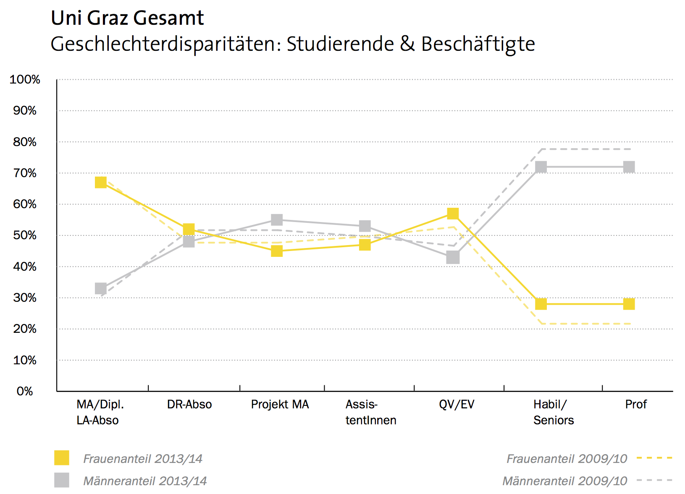

Quelle: Universität Graz (Hg.) (2010): Zahlen, Fakten, Analysen. Chancengleichheit an der Uni Graz. Graz.
Quelle: Universität Graz (Hg.) (2014): Zahlen, Fakten, Analysen. Chancengleichheit an der Uni Graz. Graz.
Historische Erklärung
Quelle: Universität Graz (Hg.) (2010): Zahlen, Fakten, Analysen. Chancengleichheit an der Uni Graz. Graz.
Quelle: Universität Graz (Hg.) (2010): Zahlen, Fakten, Analysen. Chancengleichheit an der Uni Graz. Graz.
Familienplanung
Weitere Gründe
Studie
Ablauf
Tätigkeiten I
Tätigkeiten II
Reflexion
Thanks for the fish - irgendwas lustiges zum Abschluss